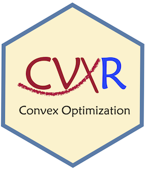

Version 1.0
Anqi Fu, David W. Kang, Balasubramanian Narasimhan and Stephen Boyd
2026-03-01
Source:vignettes/version1.Rmd
version1.RmdWhat is new?
Version 1.0 is a major upgrade. The improvements include:
- A new reduction framework that automatically chooses the most appropriate solver for a problem
- Addition of a large number of solvers using native
Rinterfaces - Facilities for geometric programming
- Improvements in speed.
What has changed?
Implementation changes include:
- Default QP solver: now,
OSQP, which means that some results will differ slightly from previous runs. However, ECOS can be explicitly specified if exact replication of old results are desired - Strict inequalities are not allowed in constraints.
Syntax changes (to match cvxpy 1.x) include:
-
Int(m, n)is nowVariable(m, n, integer = TRUE) -
Bool(m, n)is nowVariable(m, n, boolean = TRUE) -
Semidef(n, n)is nowVariable(n, n, PSD = TRUE)
and so on. Details may be found on the CVXR Website.